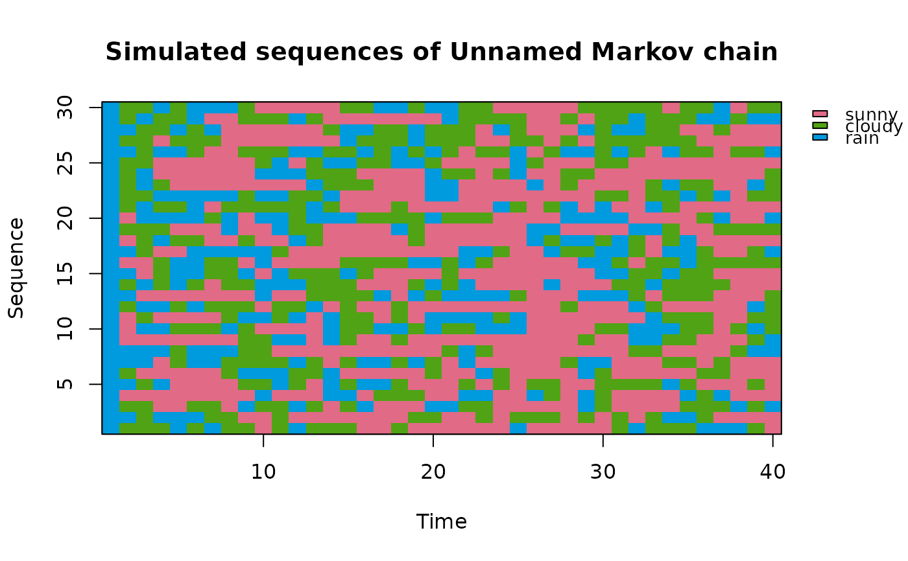
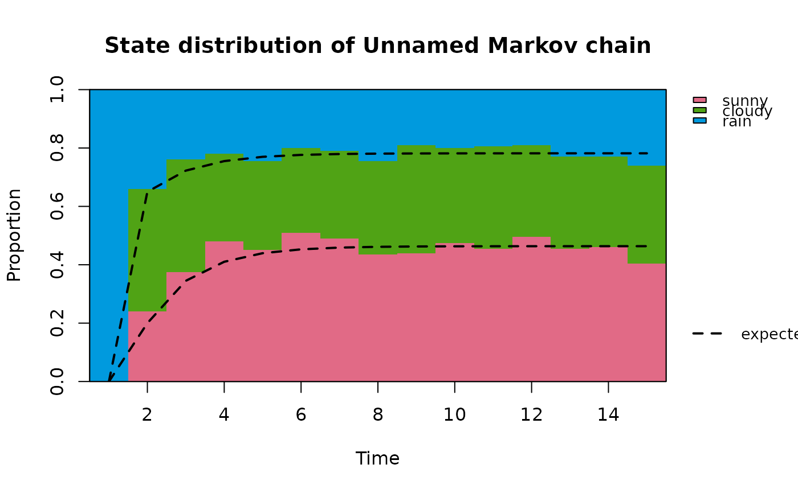
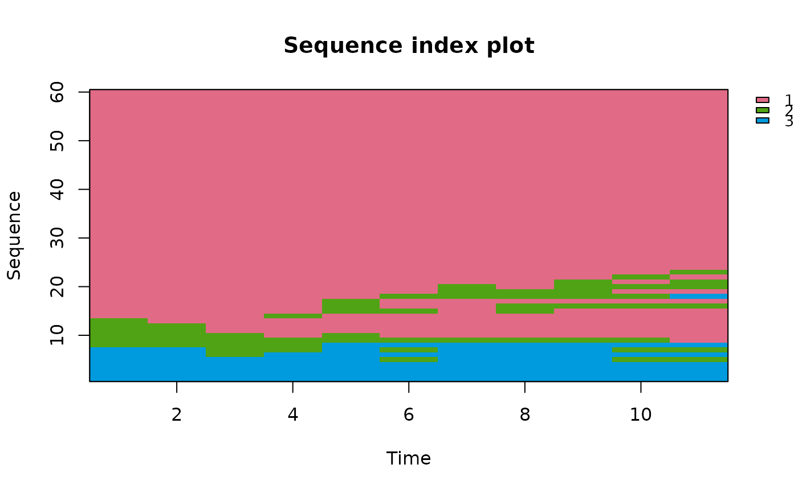
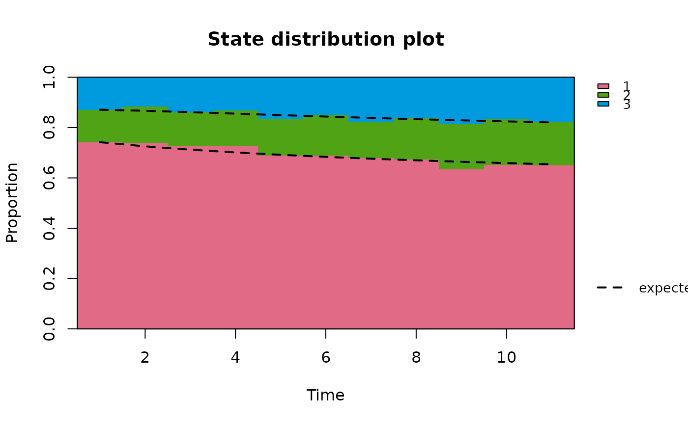

Draws simulated or observed trajectories of a Markov chain either as a sequence index plot (each sequence a row of coloured cells, one per time point) or as a state distribution plot (the proportion of sequences in each state at each time point), optionally with the distribution expected from a chain overlaid.
Arguments
- x
A
markovchainobject, from whichnSequencessequences ofstepstime points are simulated, or observed data: a sequence, a list of sequences (of possibly different lengths), or a matrix or data frame with one sequence per row and one time point per column. Missing values are left blank.- type
"index"(the default) for a sequence index plot,"distribution"for a state distribution plot.- nSequences, steps
For a
markovchain: the number of sequences to simulate and their number of time points (the initial state included).- initial
For a
markovchain: the distribution of the initial state, as inredistribute:NULL(uniform, the default), a state name, or a numeric vector of probabilities.- chain
For observed data, an optional
markovchainon the same states whose expected state distribution, started from the observed distribution at the first time point, is overlaid on the state distribution plot. For amarkovchainxit isxitself.- sort
For
type = "index":"none"(the default) keeps the sequences in their order;"first"and"last"sort them by their state at the first or last time point (ties broken by the following or preceding time points).- expected
For
type = "distribution": whether to overlay the expected distribution when a chain is available (defaultTRUE).- col
Optional vector of colours, one per state. The default is
grDevices::hcl.colors(n, "Dark 3").- legend
Whether to draw a legend of the states (default
TRUE).- main, xlab, ylab
Title and axis labels.
- seed
For a
markovchain: an optional whole number. When given, the sequences are simulated afterset.seed(seed)and the caller's random number stream is left untouched.- ...
Further graphical parameters passed to
plot.default.
Value
Invisibly, a list with sequences, the character matrix of
the sequences as plotted (one row per sequence, after sorting);
proportions, the matrix of the observed proportion of each state
(rows) at each time point (columns); and expected, the matching
matrix of expected proportions, or NULL when no chain is
available.
Details
Sequence index plots and state distribution plots are the two basic
graphs of sequence analysis (Gabadinho et al. 2011). For a Markov chain
the first shows the lengths of the spells in each state and the second
how the distribution of the state moves towards the stationary
distribution. The expected distribution at time \(t\) is
\(\mu_1 P^{t-1}\), with \(\mu_1\) the observed (or, for a
markovchain x, the given) initial distribution, computed by
redistribute; with observed data a systematic gap between the
two suggests that the chain is not time-homogeneous (see
assessStationarity). The proportions at each time point
are computed over the sequences observed at that time point.
The sequences of a markovchain are simulated in C++ by inversion of
the cumulative probabilities with R's uniform generator, so set.seed
and seed control them. The plot is drawn with base graphics. The legend is placed in the right
margin, which is widened for the purpose and restored afterwards.
References
Gabadinho, A., Ritschard, G., Mueller, N. S. and Studer, M. (2011). Analyzing and visualizing state sequences in R with TraMineR. Journal of Statistical Software, 40(4), 1-37. doi:10.18637/jss.v040.i04
See also
rmarkovchain, redistribute,
autoplot.markovchain (type = "flow")
Examples
s <- c("sunny", "cloudy", "rain")
weather <- new("markovchain", states = s, transitionMatrix = matrix(
c(0.7, 0.2, 0.1, 0.3, 0.4, 0.3, 0.2, 0.45, 0.35), 3, byrow = TRUE,
dimnames = list(s, s)))
plotSequence(weather, nSequences = 30, steps = 40, initial = "rain", seed = 1)

plotSequence(weather, type = "distribution", nSequences = 200, steps = 15,
initial = "rain", seed = 1)

# observed trajectories, sorted by their first state, and their
# distribution against a time-homogeneous chain fitted to them
data(holson)
plotSequence(holson[1:60, 2:12], sort = "first")

fitted <- markovchainFit(holson[, 2:12])$estimate
plotSequence(holson[, 2:12], type = "distribution", chain = fitted)
